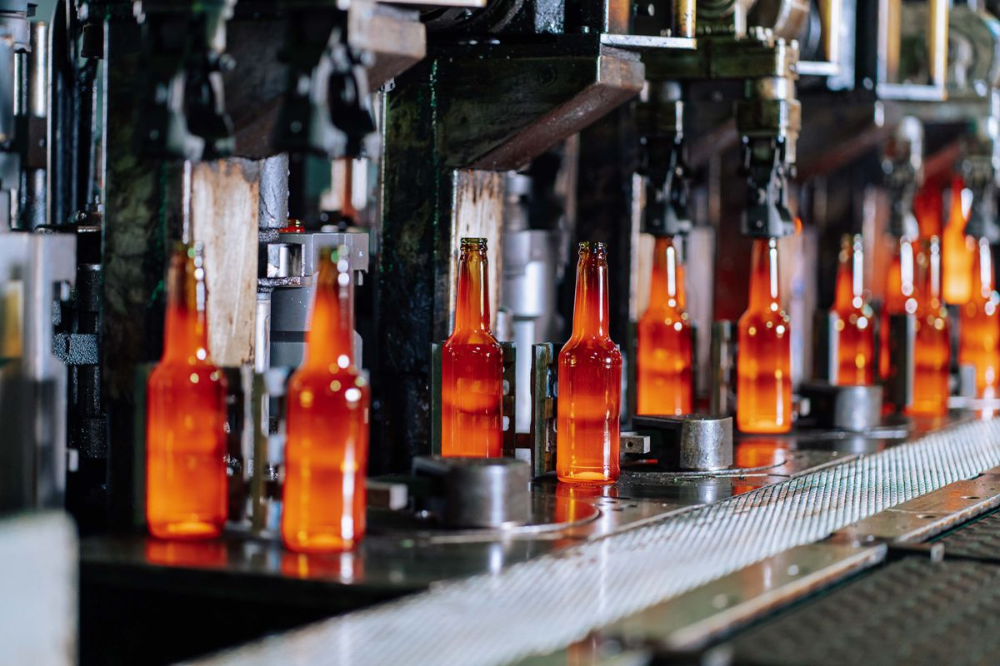
مونو بلوک
پرکن و دربند تماماتوماتیک؛ ۲۴ نازل پرکن و ۶ هد دربند پیلفر پروف؛ تا ۶۰۰۰ شیشه در ساعت؛ برای هر نوع شیشه، دستگاه اختصاصی طراحی و ساخته میشود.
نوین سازان کافل سازنده ماشینآلات بستهبندی مواد غذایی و دارویی است؛ مونو بلوک تماماتوماتیک با ۲۴ نازل پرکن و ۶ هد دربند، تا ۶۰۰۰ شیشه در ساعت — و امکان خرید اقساطی برای مشتریان خوشحساب. برای استعلام و مشاوره، فرم همین صفحه را پر کنید یا در واتساپ پیام بدهید.
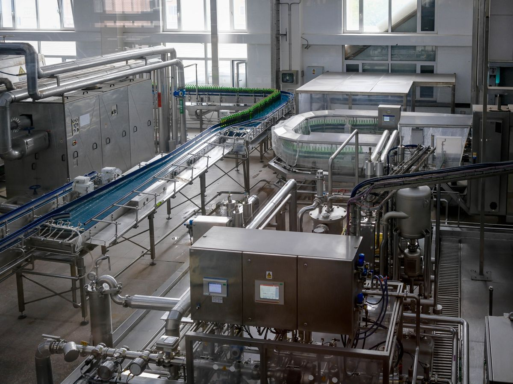
نوین سازان کافل ماشینآلات پرکن و بستهبندی مواد غذایی و دارویی میسازد؛ از مونو بلوک تماماتوماتیک تا خط کامل تولید آب آشامیدنی. برای اطلاع از مشخصات و ظرفیت هر دستگاه، فرم همین صفحه را پر کنید یا در واتساپ پیام بدهید.

پرکن و دربند تماماتوماتیک؛ ۲۴ نازل پرکن و ۶ هد دربند پیلفر پروف؛ تا ۶۰۰۰ شیشه در ساعت؛ برای هر نوع شیشه، دستگاه اختصاصی طراحی و ساخته میشود.
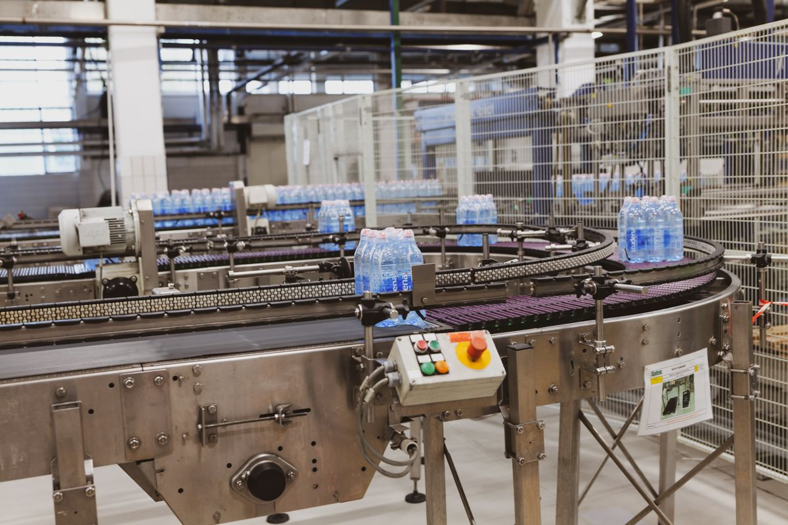
تری بلوک ۴۵ نازله آب و ۳۲ نازل؛ برای خطوط تولید نوشیدنی و مواد غذایی؛ برای اطلاع از مشخصات و ظرفیت، استعلام بگیرید.
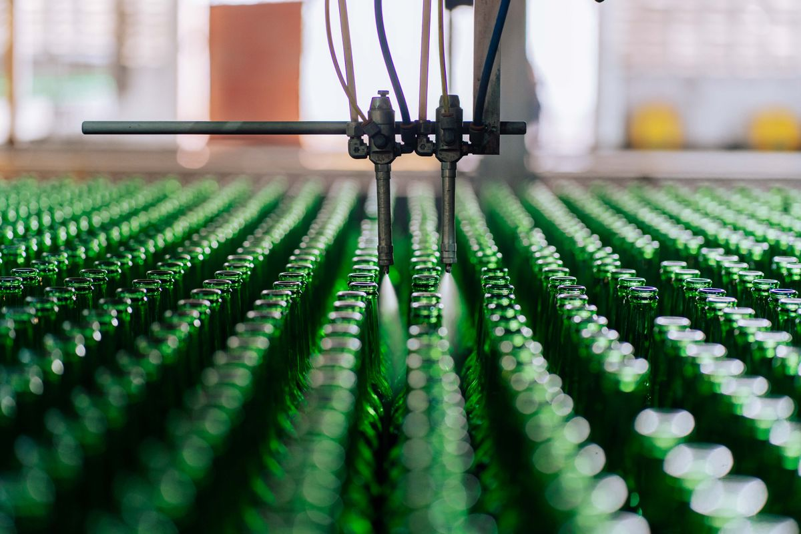
خط ۳۲ نازل با لیبلزن ۵ لقمه برای بطری ۱٫۵ لیتری و خط ۴۵ نازل با لیبلزن ۶ لقمه برای بطری ۰٫۵ لیتری؛ هر دو خط مجهز به شرینک اورلب.
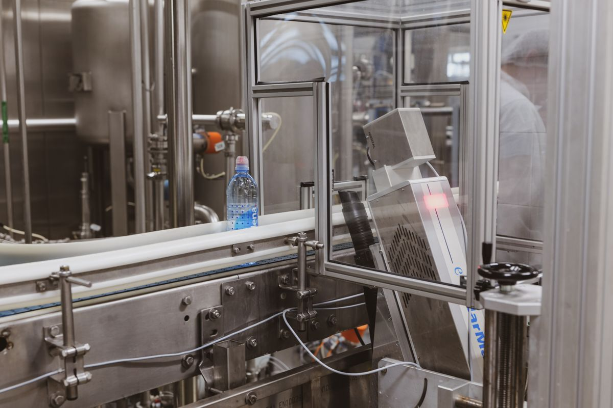
لیبلزن OPP با ۶ لقمه دو ستاره؛ تابلو برق با لوازم کنترلی هوشمند؛ ظاهر دستگاه از جنس استنلس استیل ۳۰۴؛ نمایش کلیه عملیات بر روی تابلو (تاچ اسکرین).
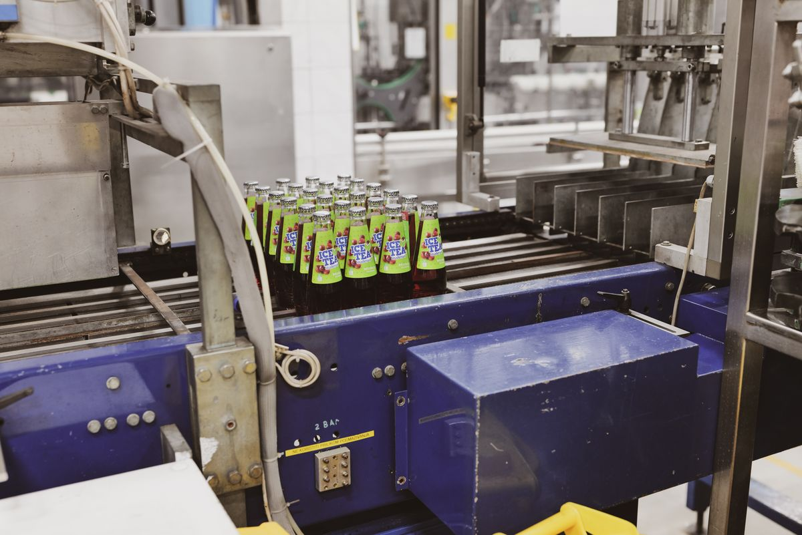
دستگاه شرینک اورلب نیمکارتن (کارتنگذار دایکات) با ظرفیت ۲۲ بسته در دقیقه؛ بستهبندی سریع، دقیق و حرفهای کارتنها.
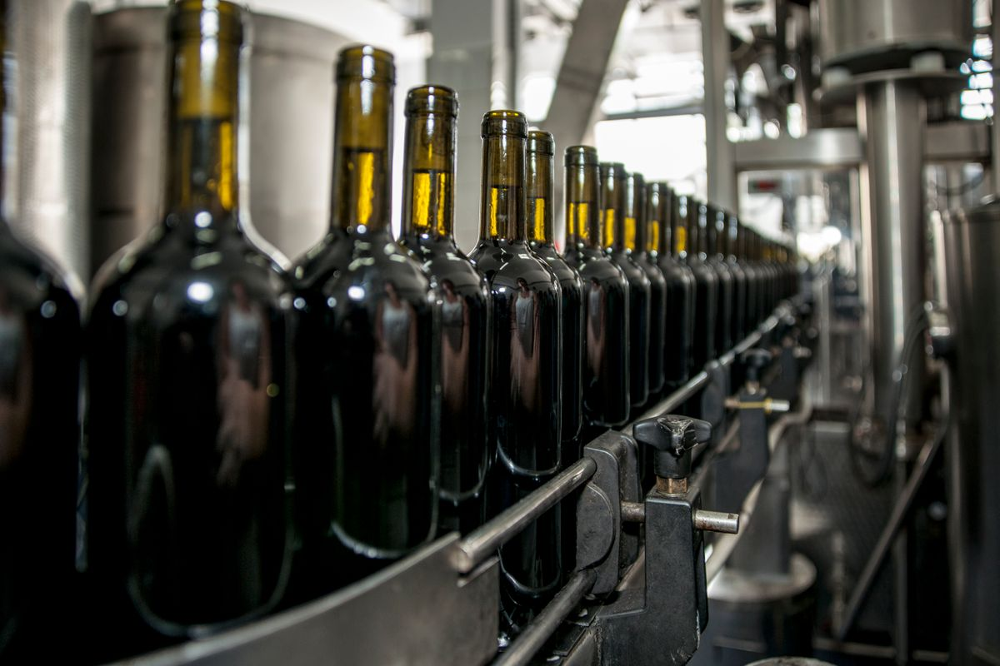
دستگاه پرکن ۴۵ نازل نوشیدنی گازدار، مجهز به سیستم دربندی P-Complex؛ برای استعلام مشخصات و ظرفیت، تماس بگیرید.
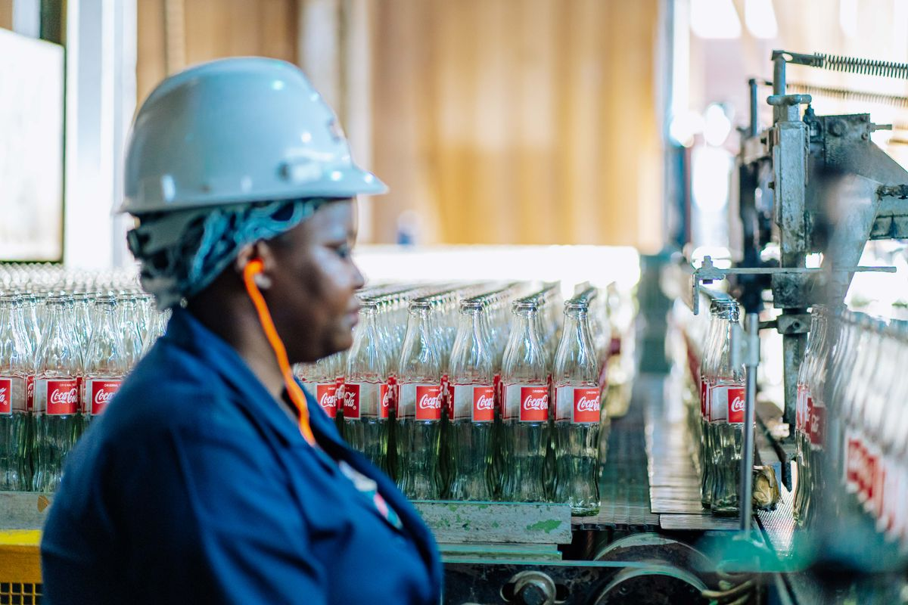
نوین سازان کافل ماشینآلات بستهبندی مواد غذایی و دارویی میسازد؛ از پرکن ۴۵ نازل نوشیدنی گازدار با سیستم دربندی P-Complex تا خط کامل تولید آب آشامیدنی.
واحد خدمات پس از فروش کامپک پس از تحویل دستگاه همراه شماست؛ راههای ارتباطی در بخش تماس همین صفحه است.
ظاهر دستگاه لیبلزن OPP از جنس استنلس استیل ۳۰۴ است؛ تابلو برق با لوازم کنترلی هوشمند و نمایش عملیات روی تاچ اسکرین.
مونو بلوک ۲۴ نازل کافل تا ۶۰۰۰ شیشه در ساعت با دربند پیلفر پروف پر میکند.
امکان خرید اقساطی دستگاهها برای مشتریان خوشحساب فراهم است؛ شرایط اقساط را در تماس بپرسید.
نمایی از خطوط پرکن و بستهبندی نوشیدنی و مواد غذایی — دستگاههایی که کافل برای کارخانهها میسازد.
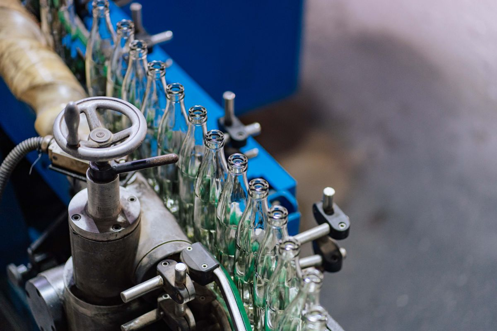
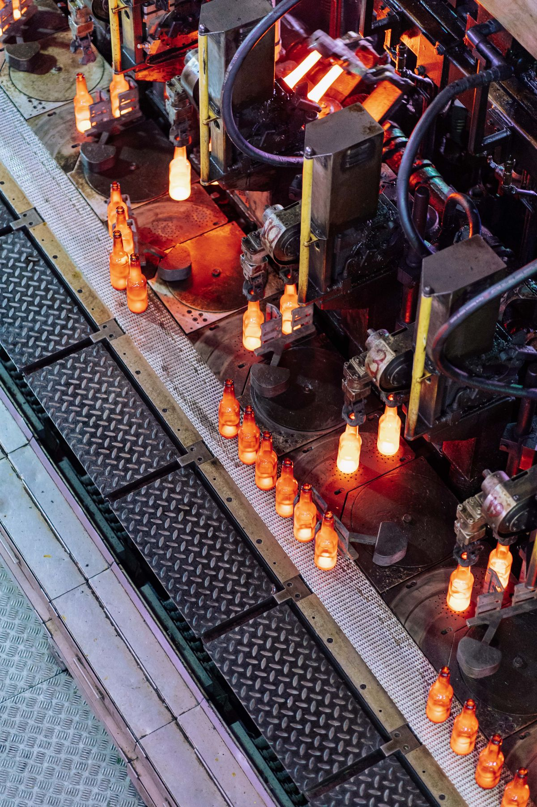
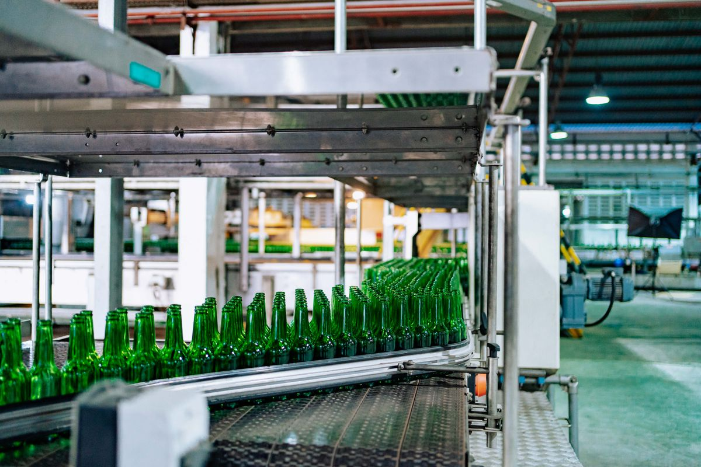
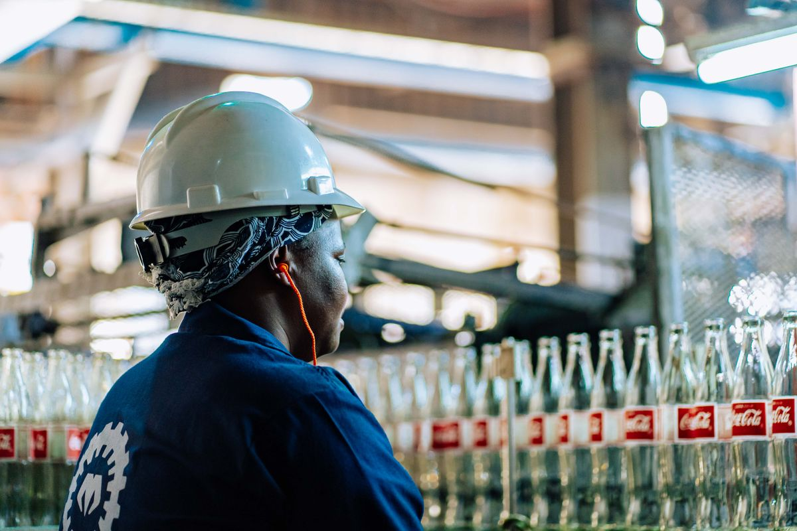
در فرم همین صفحه، نوع دستگاه و مشخصات تماس را ثبت کنید.
با شمارهای که ثبت کردهاید تماس میگیریم؛ ظرفیت خط، مشخصات دستگاه و شرایط اقساط را شفاف اعلام میکنیم.
پس از توافق، دستگاه شما ساخته میشود و زمان تحویل هماهنگ میشود.
واحد خدمات پس از فروش کامپک پس از تحویل دستگاه همراه شماست.
فرم همین صفحه را پر کنید یا با ۰۲۱-۴۶۰۷۵۰۳۹ یا ۰۹۱۲۲۷۶۰۴۲۳ تماس بگیرید یا در واتساپ پیام بدهید.
امکان خرید اقساطی دستگاهها برای مشتریان خوشحساب فراهم است؛ شرایط اقساط را در واتساپ یا تماس بپرسید.
مونو بلوک ۲۴ نازل تا ۶۰۰۰ شیشه در ساعت؛ تری بلوک ۴۵ نازله آب؛ شرینک اورلب نیمکارتن ۲۲ بسته در دقیقه؛ خط کامل تولید آب آشامیدنی با خط ۳۲ نازل و خط ۴۵ نازل.
مواد غذایی و دارویی؛ آب آشامیدنی و آب معدنی، نوشابه و نوشیدنی گازدار، نوشابه انرژیزا در قوطی آلومینیومی و مایعات در بطری و شیشه.
تهران، شهر قدس، شهرک صنعتی زاگرس، کوچه البرز، پلاک ۵. توجه: در برخی دایرکتوریهای اینترنتی، آدرس شهرک صنعتی پرند هم برای این شرکت ثبت شده است؛ پیش از مراجعه، برای اطمینان از آدرس فعلی تماس بگیرید.
فرم را پر کنید؛ برای مشاوره فنی و استعلام با شما تماس میگیریم. اگر ترجیح میدهید مستقیم صحبت کنیم، در واتساپ پیام بدهید:
۰۹۱۲۲۷۶۰۴۲۳ واتساپ: ۰۹۱۲۲۷۶۰۴۲۳ اینستاگرام: @novinsazankafel ایمیل: aminabparvar@gmail.com